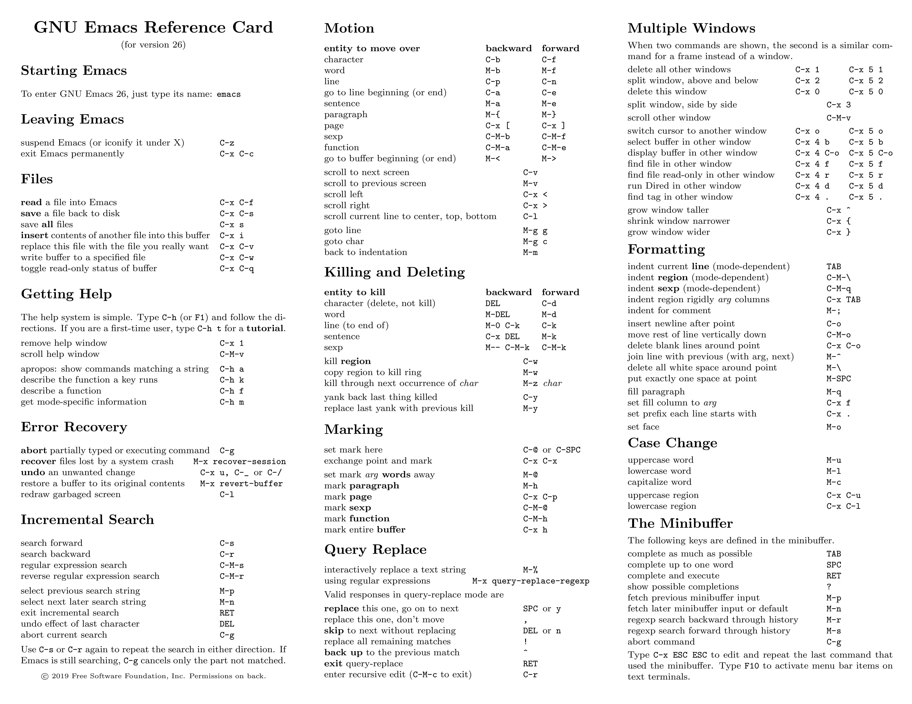
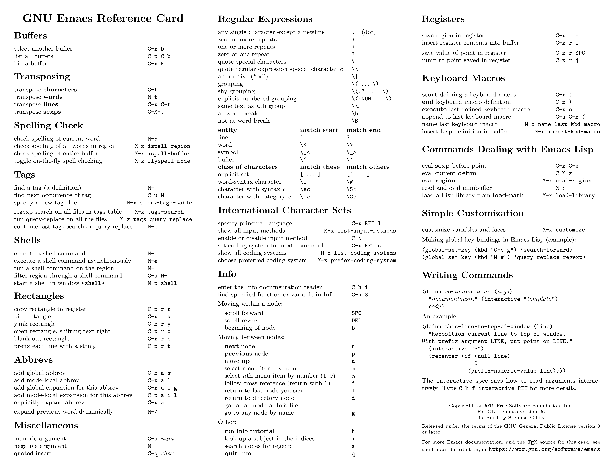

Terminal-based Text Editors: nano, emacs and vim
Last updated on 2025-08-22 | Edit this page
Overview
Questions
- “How do I edit text files from the terminal?”
- “Which text editor should I use?”
Objectives
- “Learn about three major editors in Linux/Unix: nano, emacs and vi/vim”
- “Learn the basic key combinations and operation of those editors”
Terminal-based Text Editors
During your interaction with an HPC cluster from the command line,
you usually work often with text files. As we learn from the previous
episode, for just reading files, we can use the commands
cat, more and less. For modifying
text files we need a different application, a text editor. Notice that
on the cluster we are working with pure text files in contrast with
office applications like Microsoft Word and equivalent free versions
like LibreOffice. Those applications are called “Word Processors” as
they not only deal with the text content but they also are in charge of
the control how the text is presented on screen and on paper. “Word
Processors” are not the same as “Text Editors” and for most cases “Word
Processors” are of no use in HPC clusters.
Text editors work just with the characters, spaces and new lines. When a file only contain those elements without any information about formatting, the file is said is in “Plain Text”. There is one important difference on how Windows and Linux/Linux marks new lines, making Windows “Text Files” as having some extra “spurious” characters at the end of each line and text files created on Linux as having no new lines at all when read with Windows applications like “Notepad”. To solve this situation, there are a couple of applications on Linux that convert from one “flavor” of text file into the other. They are “dos2unix” and “unix2dos”.
There are several terminal-based text editors available on Linux/Unix. From those we have selected three to present on this episode for you. They are nano, emacs, and vim. Your choice of an editor depends mostly on how much functionality do you want from your editor, how many fingers do you want to use for a given command, and the learning curve to master it. There is nothing wrong of using one of those editors over the others. Beginners of user who rarely edit files would find nano a pretty fine and simple editor for their needs that has basically no learning curve. If you advance deeper into the use of the cluster and edit files often your choice will be most likely one between emacs or vi/vim with the choice being mostly a matter of preference as both are full featured editors.
nano and emacs are direct input editors, ie you start writing directly as soon as you type with the keyboard. In contrast vi/vim is a modal editor. You type keys to change modes on the editor, some of these keys allowing you to start typing or return to command mode where new commands can be entered. In any case there are quite a large number of commands and key combinations that can be entered on any of those editors. For this episode we will concentrate our attention on a very specific set of skills that once learned will give you to work with text files. The skills are:
- Open the editor to open a file, save the file that is being edited or saving the file and leaving the editor.
- Move around the file being edited. Going to the beginning, the end or a specific line.
- Copy, cut and paste text on the same file.
- Search for a set of characters and use the search and replace functionality.
There is far more to learn in a text editor, each of those skills can be go deeper into more complex functionality and that is the major difference between nano and the other two editor, the later giving you far more complexity and power in the skills at the price of a steeper learning curve.
Meta, Alt and Option keys
On modern keyboards the Alt key has come to replace the Meta key of the old MIT keyboards. Both nano and emacs make extensive use of Meta for some key combinations. A situation that can be confusing on windows machines with Alt and Win keys and on Mac with the Option and Command keys.
Since the 1990s Alt has been printed on the Option key (⌥ Opt) on most Mac keyboards. Alt is used in non-Mac software, such as non-macOS Unix and Windows programs, but in macOS it is always referred as the Option key. The Option key’s behavior in macOS differs slightly from that of the Windows Alt key (it is used as a modifier rather than to access pull-down menus, for example).
On Macs Terminal application under the “Edit” > “Use Option as Meta key”. For emacs you can use ESC as a replacement of the Meta key.
nano
Nano is a small andfriendly editor with commands that are generally accessed by using Control (Ctrl) combined with some other key.
Opening and closing the editor
You can start editing a file using a command line like this:
~$ nano myfile.f90To leave the editor type Ctrl+X, you will be asked if you want to save your file to disk. Another option is to save the file with Ctrl+O but remaing on the editor.
Moving around the file
On nano you can start typing as soon you open the
file and the arrow keys will move you back and for on the same line or
up and down on lines. For large files is always good to learn how to
move to the begining and end of the file. Use
Meta+\ and Meta+/ to do
that. Those key combinations are also shown as M-\ (first
line) M-/ (last line). To move to a specific line and
column number use Ctrl+_, shown on the bottom bar
as ^_
Copy, cut and paste
The use the internal capabilities of the text editor to copy and paste starts by selecting the area of text that you want to copy or cut. Use Meta+A to start selecting the area to copy use Meta+6 to delete use Meta+Delete, to cut but save the contents Ctrl+K to paste the contents of the region Ctrl+U
Search for text and search and Replace
To search use Ctrl+W, you can repeat the command to searching for more matches, to search and replace use Ctrl+\ enter the text to search and the text to replace in place.
Reference
Beyond the quick commands above, there are several commands available on nano, and the list below comes from the help text that you can see when execute Ctrl+G. When you see the symbol "^", it means to press the Control Ctrl key; the symbol "M-" is called Meta, but in most keyboards is identified with the Alt key or Windows key. See above for the discussion about the use of Meta key.
^G (F1) Display this help text
^X (F2) Close the current file buffer / Exit from nano
^O (F3) Write the current file to disk
^J (F4) Justify the current paragraph
^R (F5) Insert another file into the current one
^W (F6) Search for a string or a regular expression
^Y (F7) Move to the previous screen
^V (F8) Move to the next screen
^K (F9) Cut the current line and store it in the cutbuffer
^U (F10) Uncut from the cutbuffer into the current line
^C (F11) Display the position of the cursor
^T (F12) Invoke the spell checker, if available
^_ (F13) (M-G) Go to line and column number
^\ (F14) (M-R) Replace a string or a regular expression
^^ (F15) (M-A) Mark text at the cursor position
(F16) (M-W) Repeat last search
M-^ (M-6) Copy the current line and store it in the cutbuffer
M-} Indent the current line
M-{ Unindent the current line
^F Move forward one character
^B Move back one character
^Space Move forward one word
M-Space Move back one word
^P Move to the previous line
^N Move to the next line
^A Move to the beginning of the current line
^E Move to the end of the current line
M-( (M-9) Move to the beginning of the current paragraph
M-) (M-0) Move to the end of the current paragraph
M-\ (M-|) Move to the first line of the file
M-/ (M-?) Move to the last line of the file
M-] Move to the matching bracket
M-- Scroll up one line without scrolling the cursor
M-+ (M-=) Scroll down one line without scrolling the cursor
M-< (M-,) Switch to the previous file buffer
M-> (M-.) Switch to the next file buffer
M-V Insert the next keystroke verbatim
^I Insert a tab at the cursor position
^M Insert a newline at the cursor position
^D Delete the character under the cursor
^H Delete the character to the left of the cursor
M-T Cut from the cursor position to the end of the file
M-J Justify the entire file
M-D Count the number of words, lines, and characters
^L Refresh (redraw) the current screen
M-X Help mode enable/disable
M-C Constant cursor position display enable/disable
M-O Use of one more line for editing enable/disable
M-S Smooth scrolling enable/disable
M-P Whitespace display enable/disable
M-Y Color syntax highlighting enable/disable
M-H Smart home key enable/disable
M-I Auto indent enable/disable
M-K Cut to end enable/disable
M-L Long line wrapping enable/disable
M-Q Conversion of typed tabs to spaces enable/disable
M-B Backup files enable/disable
M-F Multiple file buffers enable/disable
M-M Mouse support enable/disable
M-N No conversion from DOS/Mac format enable/disable
M-Z Suspension enable/disableExercise: Barnsley_fern
Change your current working directory to your
$SCRATCHfolderCreate a new folder called
FERNOpen
nanoand enter the following code unde the filefern.f90The code has many opportunities for copy and paste, try to use that as much as possible to familiarize yourself with the editing capabilities ofnano
FORTRAN
!Generates an output file "plot.dat" that contains the x and y coordinates
!for a scatter plot that can be visualized with say, GNUPlot
program BarnsleyFern
implicit none
double precision :: p(4), a(4), b(4), c(4), d(4), e(4), f(4), trx, try, prob
integer :: itermax, i
!The probabilites and coefficients can be modified to generate other
!fractal ferns, e.g. http://www.home.aone.net.au/~byzantium/ferns/fractal.html
!probabilities
p(1) = 0.01; p(2) = 0.85; p(3) = 0.07; p(4) = 0.07
!coefficients
a(1) = 0.00; a(2) = 0.85; a(3) = 0.20; a(4) = -0.15
b(1) = 0.00; b(2) = 0.04; b(3) = -0.26; b(4) = 0.28
c(1) = 0.00; c(2) = -0.04; c(3) = 0.23; c(4) = 0.26
d(1) = 0.16; d(2) = 0.85; d(3) = 0.22; d(4) = 0.24
e(1) = 0.00; e(2) = 0.00; e(3) = 0.00; e(4) = 0.00
f(1) = 0.00; f(2) = 1.60; f(3) = 1.60; f(4) = 0.44
itermax = 100000
trx = 0.0D0
try = 0.0D0
open(1, file="plot.dat")
write(1,*) "#X #Y"
write(1,'(2F10.5)') trx, try
do i = 1, itermax
call random_number(prob)
if (prob < p(1)) then
trx = a(1) * trx + b(1) * try + e(1)
try = c(1) * trx + d(1) * try + f(1)
else if(prob < (p(1) + p(2))) then
trx = a(2) * trx + b(2) * try + e(2)
try = c(2) * trx + d(2) * try + f(2)
else if ( prob < (p(1) + p(2) + p(3))) then
trx = a(3) * trx + b(3) * try + e(3)
try = c(3) * trx + d(3) * try + f(3)
else
trx = a(4) * trx + b(4) * try + e(4)
try = c(4) * trx + d(4) * try + f(4)
end if
write(1,'(2F10.5)') trx, try
end do
close(1)
end program BarnsleyFern- Load the modules for the GCC compiler. We will learn about modules in the next lecture.
~$ module purge
~$ module load lang/gcc/12.2.0 - Compile the code with the following command:
~$ gfortran fern.f90 -o fern- Execute the code
~$ ./fernThis will generate a file plot.dat that we can plot from
Open On Demand
Direct the browser to Thorny Flat Open On Demand
Create a new Jupyter session
On the jupyter-lab notebook enter the following commands:
cd /scratch/gufranco/FERN
pwd
ls
import matplotlib.pyplot as plt
import numpy as np
X, Y = np.loadtxt('plot.dat', unpack=True)
fig = plt.figure(figsize=(9, 9))
ax=plt.gca()
ax.set_aspect('equal')
plt.xlim(-5,5)
plt.ylim(0,10)
plt.axis('Off')
plt.title("Barnsley Fern")
plt.scatter(X, Y, s=0.6, color='g', marker=',');emacs
Emacs is an extensible, customizable, open-source text editor. Together with vi/vim is one the most widely used editors in Linux/Unix environments. There are a big number of commands, customization and extra modules that can be integrated with Emacs. We will just briefly cover the basics as we did for nano
Opening and closing the editor
In addition to the terminal-base editor, emacs also has a GUI environment that could be selected by default. To ensure that you remain in terminal-based version use:
~$ emacs -nw data.txtTo leave the editor execute Ctrl+X
C, if you want to save the file to disk use
Ctrl+X S, another representation of the
keys to save and close could be C-x C-s C-x C-c, actually,
the Ctrl key can be keep pressed while you hit the sequence
x s x c to get the same effect.
Moving around the file
To go to the beginning of the file use Meta+< to the end of the file Meta+>. To go to a given line number use Ctrl+g Ctrl+g
Copy, cut and paste
To copy or cut regions of text starts by selecting the area of text that you want to copy or cut. Use Ctrl+Space to start selecting the area. To copy use Meta+W to delete use Ctrl+K, to cut but save the contents Ctrl+W. Finally, to paste the contents of the region Ctrl+Y
Search for text and search and Replace
To search use Ctrl+S, you can repeat the command to searching for more matchs, to search and replace use Meta+% enter the text to search and the text to replace in place.
Reference
The number of commands for Emacs is large, here the basic list of commands for editing, moving and searching text.
The best way of learning is keeping at hand a sheet of paper with the commands For example GNU Emacs Reference Card can show you most commands that you need.
Below you can see the same 2 page Reference Card as individual images.


vi/vim
The third editor is vi and found by default installed on Linux/Unix systems. The Single UNIX Specification and POSIX describe vi, so every conforming system must have it. A popular implementation of vi is vim that stands as an improved version. On our clusters we have vim installed.
Opening and closing the editor
You can open a file on vim with
~$ vim code.pyvi is a modal editor: it operates in either insert mode (where typed text becomes part of the document) or normal mode (where keystrokes are interpreted as commands that control the edit session). For example, typing i while in normal mode switches the editor to insert mode, but typing i again at this point places an "i" character in the document. From insert mode, pressing ESC switches the editor back to normal mode. On the lines below we ask for pressing the ESC in case you are in insert mode to ensure you get back to normal mode
To leave the editor without saving type ESC follow by
:q!. To leave the editor saving the file type
ESC follow by :x To just save the file and
continue editing type ESC follow by :w.
Moving around the file
On vim you can use the arrow keys to move around. In the traditional vi you have to use the following keys (on normal mode):
- H Left
- J Down
- K Up
- L Right
Go to the first line using ESC follow by :1.
Go to the last line using ESC follow by :$.
Copy, cut and paste
To copy areas of text you start by entering in visual mode with v, selecting the area of interest and using d to delete, y to copy and p to paste.
Search for text and search and Replace
To search use / and the text you want to search, you can
repeat the command to searching for more matches with n, to
search and replace use
:%s/<search pattern>/<replace text>/g enter the
text to search and the text to replace everywhere. Use
:%s/<search pattern>/<replace text>/gc to ask
for confirmation before each modification.
Reference
A very beautiful Reference Card for vim can be found here: Vim CheatSheet

Exercise 1
Select an editor. The challenge is write this code in a file called
Sierpinski.c
C
#include <stdio.h>
#define SIZE (1 << 5)
int main()
{
int x, y, i;
for (y = SIZE - 1; y >= 0; y--, putchar('\n')) {
for (i = 0; i < y; i++) putchar(' ');
for (x = 0; x + y < SIZE; x++)
printf((x & y) ? " " : "* ");
}
return 0;
}For those using vi, here is the challenge. You cannot use the arrow keys. Not a single time! It is pretty hard if you are not used to it, but it is a good exercise to learn the commands.
Another interesting challenge is to write the line
for (y = SIZE - 1; y >= 0; y--, putchar('\n')) and copy
and paste it to > form the other 2 for loops in the code,
and editing only after being copied.
Once you have successfully written the source code, you can see your hard work in action.
On the terminal screen, execute this:
~$ gcc Sierpinski.c -o SierpinskiThis will compile your source code Sierpinski.c in C
into a binary executable called Sierpinski. Execute the
code with:
~$ ./SierpinskiThe resulting output is kind of a surprise so I will not post it here. The original code comes from rosettacode.org
Exercise 2 (Needs X11)
On the folder
workshops_hands-on/Introduction_HPC/4._Terminal-based_Editors
you will find a Java code on file JuliaSet.java.
For this exercise you need to connect to the cluster with X11 support. On Thorny Flat that will be:
~$ ssh -X <username>@ssh.wvu.edu
~$ ssh -X <username>@tf.hpc.wvu.eduOnce you are there execute this command to load the Java compiler
~$ module load lang/java/jdk1.8.0_201Once you have loaded the module go to the folder
workshops_hands-on/Introduction_HPC/4._Terminal-based_Editors
and compile > the Java code with this command
~$ javac JuliaSet.javaand execute the code with:
~$ java JuliaSetA window should pop up on your screen. Now, use one of the editors presented on this episode and do the changes mentioned on the source code to made the code > multithreaded. Repeat the same steps for compiling and executing the code.
Change a bit the parameters on the code, the size of the window for example or the constants CX and CY.
Exercise 3
On the folder
workshops_hands-on/Introduction_HPC/4._Terminal-based_Editors
there is a script download-covid19.sh. The script will
download an updated compilation of Official Covid-19 cases around the
world. Download the data about Covid 19 owid-covid-data.csv
using the command:
$> sh download-covid19.shOpen the file owid-covid-data.csv with your favorite
editor. Go to to the first and last line on that file. The file has too
many lines to be scrolled line by line.
Search for the line with the string
United States,2021-06-30
Why vi was programmed to not use the arrow keys?
From Wikipedia with a anecdotal story from The register
Joy used a Lear Siegler ADM-3A terminal. On this terminal, the Escape key was at the location now occupied by the Tab key on the widely used IBM PC keyboard (on the left side of the alphabetic part of the keyboard, one row above the middle row). This made it a convenient choice for switching vi modes. Also, the keys h,j,k,l served double duty as cursor movement keys and were inscribed with arrows, which is why vi uses them in that way. The ADM-3A had no other cursor keys. Joy explained that the terse, single character commands and the ability to type ahead of the display were a result of the slow 300 baud modem he used when developing the software and that he wanted to be productive when the screen was painting slower than he could think.

- “There are three major editor in Linux/Unix: nano, emacs and vim”
- “Once decided for on text editor it is important to the basic key combinations and operation of your editor of choice”